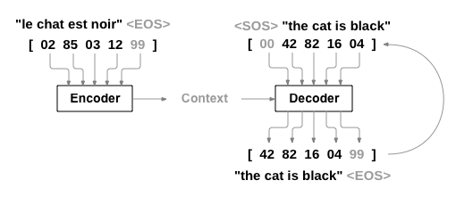
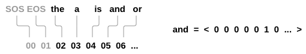
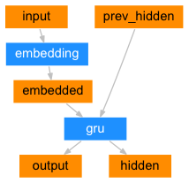
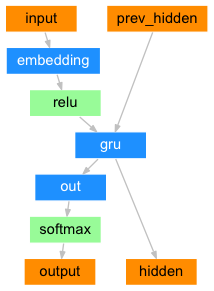
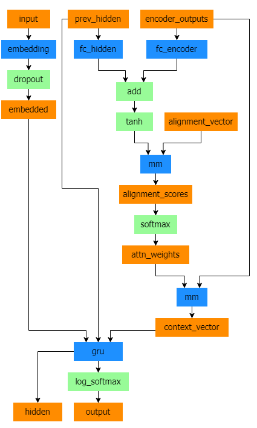

备注
点击此处下载完整示例代码
从零开始的自然语言处理：使用序列到序列网络和注意力机制进行翻译¶
创建于：2025 年 4 月 1 日 | 最后更新：2025 年 4 月 1 日 | 最后验证：2024 年 11 月 5 日
作者：Sean Robertson
本教程是三个部分系列的一部分：
这是“从零开始的自然语言处理”系列的第三和最后一篇教程，我们将编写自己的类和函数来预处理数据以执行我们的 NLP 建模任务。
在这个项目中，我们将教会神经网络从法语翻译成英语。
[KEY: > input, = target, < output]
> il est en train de peindre un tableau .
= he is painting a picture .
< he is painting a picture .
> pourquoi ne pas essayer ce vin delicieux ?
= why not try that delicious wine ?
< why not try that delicious wine ?
> elle n est pas poete mais romanciere .
= she is not a poet but a novelist .
< she not not a poet but a novelist .
> vous etes trop maigre .
= you re too skinny .
< you re all alone .
...取得不同程度的成功。
这得益于简单而强大的序列到序列网络的想法，其中两个循环神经网络协同工作，将一个序列转换为另一个序列。编码网络将输入序列压缩成一个向量，解码网络将这个向量展开成一个新的序列。

为了改进这个模型，我们将使用注意力机制，它让解码器学会关注输入序列的特定范围。
推荐阅读：
我假设你已经至少安装了 PyTorch，了解 Python，并且理解张量：
https://maskerprc.github.io/ 安装说明
使用 PyTorch 进行深度学习：60 分钟快速入门，了解 PyTorch 的基本使用
通过实例学习 PyTorch，全面深入的了解
PyTorch 面向前 Torch 用户，如果您是前 Lua Torch 用户
了解序列到序列网络及其工作原理也将很有帮助：
您还可以找到之前的 NLP 从零开始教程：使用字符级 RNN 对名称进行分类和 NLP 从零开始教程：使用字符级 RNN 生成名称，这些概念与编码器和解码器模型非常相似，因此这些教程也会很有帮助。
要求
from __future__ import unicode_literals, print_function, division
from io import open
import unicodedata
import re
import random
import torch
import torch.nn as nn
from torch import optim
import torch.nn.functional as F
import numpy as np
from torch.utils.data import TensorDataset, DataLoader, RandomSampler
device = torch.device("cuda" if torch.cuda.is_available() else "cpu")
加载数据文件
本项目的数据是一组数以千计的英语到法语翻译对。
Open Data Stack Exchange 上的这个问题将我引向了开源翻译网站 https://tatoeba.org/，该网站在 https://tatoeba.org/eng/downloads 提供下载 - 更好的是，有人做了额外的工作，将语言对拆分成了单独的文本文件，在这里：https://www.manythings.org/anki/
英语到法语的翻译对太大，无法包含在存储库中，请在继续之前下载到 data/eng-fra.txt 。该文件是一个制表符分隔的翻译对列表：
I am cold. J'ai froid.
备注
从这里下载数据并将其提取到当前目录。
与字符级 RNN 教程中使用的字符编码类似，我们将用一种语言中的每个单词表示为一个 one-hot 向量，或者是一个只有一个单一直接（位于单词的索引处）的巨大零向量。与一个语言中可能存在的几十个字符相比，单词要多得多，所以编码向量要大得多。然而，我们将稍微作弊一下，只使用每种语言中几千个单词的数据。

我们需要为每个单词创建一个唯一的索引，以便作为网络输入和目标的后续使用。为了跟踪所有这些信息，我们将使用一个名为 Lang 的辅助类，该类包含单词→索引（ word2index ）和索引→单词（ index2word ）字典，以及每个单词的计数（ word2count ），这将用于稍后替换罕见单词。
SOS_token = 0
EOS_token = 1
class Lang:
def __init__(self, name):
self.name = name
self.word2index = {}
self.word2count = {}
self.index2word = {0: "SOS", 1: "EOS"}
self.n_words = 2 # Count SOS and EOS
def addSentence(self, sentence):
for word in sentence.split(' '):
self.addWord(word)
def addWord(self, word):
if word not in self.word2index:
self.word2index[word] = self.n_words
self.word2count[word] = 1
self.index2word[self.n_words] = word
self.n_words += 1
else:
self.word2count[word] += 1
所有文件都是 Unicode 格式，为了简化，我们将 Unicode 字符转换为 ASCII，将所有内容转换为小写，并删除大部分标点符号。
# Turn a Unicode string to plain ASCII, thanks to
# https://stackoverflow.com/a/518232/2809427
def unicodeToAscii(s):
return ''.join(
c for c in unicodedata.normalize('NFD', s)
if unicodedata.category(c) != 'Mn'
)
# Lowercase, trim, and remove non-letter characters
def normalizeString(s):
s = unicodeToAscii(s.lower().strip())
s = re.sub(r"([.!?])", r" \1", s)
s = re.sub(r"[^a-zA-Z!?]+", r" ", s)
return s.strip()
为了读取数据文件，我们将文件拆分为行，然后将行拆分为对。所有文件都是英语→其他语言，因此如果我们想从其他语言→英语进行翻译，我添加了 reverse 标志以反转对。
def readLangs(lang1, lang2, reverse=False):
print("Reading lines...")
# Read the file and split into lines
lines = open('data/%s-%s.txt' % (lang1, lang2), encoding='utf-8').\
read().strip().split('\n')
# Split every line into pairs and normalize
pairs = [[normalizeString(s) for s in l.split('\t')] for l in lines]
# Reverse pairs, make Lang instances
if reverse:
pairs = [list(reversed(p)) for p in pairs]
input_lang = Lang(lang2)
output_lang = Lang(lang1)
else:
input_lang = Lang(lang1)
output_lang = Lang(lang2)
return input_lang, output_lang, pairs
由于有很多示例句子，我们希望快速训练，因此我们将数据集修剪为只有相对简短和简单的句子。这里最大长度为 10 个单词（包括结尾标点符号），并且我们正在过滤翻译为“我是”或“他是”等形式的句子（考虑到之前替换的撇号）。
MAX_LENGTH = 10
eng_prefixes = (
"i am ", "i m ",
"he is", "he s ",
"she is", "she s ",
"you are", "you re ",
"we are", "we re ",
"they are", "they re "
)
def filterPair(p):
return len(p[0].split(' ')) < MAX_LENGTH and \
len(p[1].split(' ')) < MAX_LENGTH and \
p[1].startswith(eng_prefixes)
def filterPairs(pairs):
return [pair for pair in pairs if filterPair(pair)]
数据准备的全过程是：
读取文本文件并按行分割，将行分割成对
标准化文本，按长度和内容过滤
从句子对中制作单词列表
def prepareData(lang1, lang2, reverse=False):
input_lang, output_lang, pairs = readLangs(lang1, lang2, reverse)
print("Read %s sentence pairs" % len(pairs))
pairs = filterPairs(pairs)
print("Trimmed to %s sentence pairs" % len(pairs))
print("Counting words...")
for pair in pairs:
input_lang.addSentence(pair[0])
output_lang.addSentence(pair[1])
print("Counted words:")
print(input_lang.name, input_lang.n_words)
print(output_lang.name, output_lang.n_words)
return input_lang, output_lang, pairs
input_lang, output_lang, pairs = prepareData('eng', 'fra', True)
print(random.choice(pairs))
Seq2Seq 模型
RNN（循环神经网络）是一种在序列上操作并使用自己的输出作为后续步骤输入的网络。
Seq2Seq 网络，或序列到序列网络，或编码器-解码器网络，由两个称为编码器和解码器的 RNN 组成。编码器读取输入序列并输出一个向量，解码器读取该向量以生成输出序列。
与使用单个 RNN 进行序列预测不同，其中每个输入对应一个输出，seq2seq 模型使我们摆脱了序列长度和顺序的限制，这使得它非常适合两种语言之间的翻译。
考虑句子 Je ne suis pas le chat noir → I am not the
black cat 。输入句子中的大多数单词在输出句子中都有直接翻译，但顺序略有不同，例如 chat noir 和 black cat 。由于 ne/pas 结构，输入句子中还有一个额外的单词。直接从输入单词的序列中生成正确的翻译将很困难。
在 seq2seq 模型中，编码器创建一个单一生成向量，在理想情况下，将输入序列的“意义”编码到这个向量中——在某个 N 维句子空间中的一个点。
编码器 ¶
seq2seq 网络的编码器是一个 RNN，它为输入句子中的每个单词输出一些值。对于每个输入单词，编码器输出一个向量和隐藏状态，并使用隐藏状态处理下一个输入单词。

class EncoderRNN(nn.Module):
def __init__(self, input_size, hidden_size, dropout_p=0.1):
super(EncoderRNN, self).__init__()
self.hidden_size = hidden_size
self.embedding = nn.Embedding(input_size, hidden_size)
self.gru = nn.GRU(hidden_size, hidden_size, batch_first=True)
self.dropout = nn.Dropout(dropout_p)
def forward(self, input):
embedded = self.dropout(self.embedding(input))
output, hidden = self.gru(embedded)
return output, hidden
解码器 ¶
解码器是另一个 RNN，它接收编码器的输出向量（组）并输出一系列单词以创建翻译。
简单解码器 ¶
在最简单的 seq2seq 解码器中，我们只使用编码器的最后一个输出。这个最后一个输出有时被称为上下文向量，因为它编码了整个序列的上下文。这个上下文向量被用作解码器的初始隐藏状态。
在解码的每一步，解码器都会接收到一个输入标记和隐藏状态。初始输入标记是字符串开头的 <SOS> 标记，第一个隐藏状态是上下文向量（编码器的最后一个隐藏状态）。

class DecoderRNN(nn.Module):
def __init__(self, hidden_size, output_size):
super(DecoderRNN, self).__init__()
self.embedding = nn.Embedding(output_size, hidden_size)
self.gru = nn.GRU(hidden_size, hidden_size, batch_first=True)
self.out = nn.Linear(hidden_size, output_size)
def forward(self, encoder_outputs, encoder_hidden, target_tensor=None):
batch_size = encoder_outputs.size(0)
decoder_input = torch.empty(batch_size, 1, dtype=torch.long, device=device).fill_(SOS_token)
decoder_hidden = encoder_hidden
decoder_outputs = []
for i in range(MAX_LENGTH):
decoder_output, decoder_hidden = self.forward_step(decoder_input, decoder_hidden)
decoder_outputs.append(decoder_output)
if target_tensor is not None:
# Teacher forcing: Feed the target as the next input
decoder_input = target_tensor[:, i].unsqueeze(1) # Teacher forcing
else:
# Without teacher forcing: use its own predictions as the next input
_, topi = decoder_output.topk(1)
decoder_input = topi.squeeze(-1).detach() # detach from history as input
decoder_outputs = torch.cat(decoder_outputs, dim=1)
decoder_outputs = F.log_softmax(decoder_outputs, dim=-1)
return decoder_outputs, decoder_hidden, None # We return `None` for consistency in the training loop
def forward_step(self, input, hidden):
output = self.embedding(input)
output = F.relu(output)
output, hidden = self.gru(output, hidden)
output = self.out(output)
return output, hidden
我鼓励您训练并观察这个模型的结果，但为了节省空间，我们将直接进入主题，介绍注意力机制。
注意力解码器
如果只将上下文向量在编码器和解码器之间传递，那么这个单一的向量就承担了编码整个句子的负担。
注意力机制允许解码器网络在解码器每一步输出时“关注”编码器输出的不同部分。首先我们计算一组注意力权重。这些权重将乘以编码器输出向量以创建加权组合。结果（在代码中称为 attn_applied ）应包含关于输入序列特定部分的信息，从而帮助解码器选择正确的输出单词。

注意力权重的计算使用另一个前馈层 attn ，以解码器的输入和隐藏状态作为输入。由于训练数据中存在各种长度的句子，为了实际创建和训练这一层，我们必须选择一个最大句子长度（输入长度，对于编码器输出），它能够应用。最大长度的句子将使用所有注意力权重，而较短的句子将只使用前几个权重。

Bahdanau 注意力，也称为加性注意力，是序列到序列模型中常用的一种注意力机制，尤其是在神经机器翻译任务中。它由 Bahdanau 等人在其论文《通过联合学习对齐和翻译的神经机器翻译》中提出。这种注意力机制使用一个学习到的对齐模型来计算编码器和解码器隐藏状态之间的注意力分数。它利用前馈神经网络来计算对齐分数。
然而，还有其他可用的注意力机制，例如 Luong 注意力，它通过计算解码器隐藏状态和编码器隐藏状态之间的点积来计算注意力分数。它不涉及 Bahdanau 注意力中使用的非线性变换。
在本教程中，我们将使用 Bahdanau 注意力。然而，探索修改注意力机制以使用 Luong 注意力将是一项有价值的练习。
class BahdanauAttention(nn.Module):
def __init__(self, hidden_size):
super(BahdanauAttention, self).__init__()
self.Wa = nn.Linear(hidden_size, hidden_size)
self.Ua = nn.Linear(hidden_size, hidden_size)
self.Va = nn.Linear(hidden_size, 1)
def forward(self, query, keys):
scores = self.Va(torch.tanh(self.Wa(query) + self.Ua(keys)))
scores = scores.squeeze(2).unsqueeze(1)
weights = F.softmax(scores, dim=-1)
context = torch.bmm(weights, keys)
return context, weights
class AttnDecoderRNN(nn.Module):
def __init__(self, hidden_size, output_size, dropout_p=0.1):
super(AttnDecoderRNN, self).__init__()
self.embedding = nn.Embedding(output_size, hidden_size)
self.attention = BahdanauAttention(hidden_size)
self.gru = nn.GRU(2 * hidden_size, hidden_size, batch_first=True)
self.out = nn.Linear(hidden_size, output_size)
self.dropout = nn.Dropout(dropout_p)
def forward(self, encoder_outputs, encoder_hidden, target_tensor=None):
batch_size = encoder_outputs.size(0)
decoder_input = torch.empty(batch_size, 1, dtype=torch.long, device=device).fill_(SOS_token)
decoder_hidden = encoder_hidden
decoder_outputs = []
attentions = []
for i in range(MAX_LENGTH):
decoder_output, decoder_hidden, attn_weights = self.forward_step(
decoder_input, decoder_hidden, encoder_outputs
)
decoder_outputs.append(decoder_output)
attentions.append(attn_weights)
if target_tensor is not None:
# Teacher forcing: Feed the target as the next input
decoder_input = target_tensor[:, i].unsqueeze(1) # Teacher forcing
else:
# Without teacher forcing: use its own predictions as the next input
_, topi = decoder_output.topk(1)
decoder_input = topi.squeeze(-1).detach() # detach from history as input
decoder_outputs = torch.cat(decoder_outputs, dim=1)
decoder_outputs = F.log_softmax(decoder_outputs, dim=-1)
attentions = torch.cat(attentions, dim=1)
return decoder_outputs, decoder_hidden, attentions
def forward_step(self, input, hidden, encoder_outputs):
embedded = self.dropout(self.embedding(input))
query = hidden.permute(1, 0, 2)
context, attn_weights = self.attention(query, encoder_outputs)
input_gru = torch.cat((embedded, context), dim=2)
output, hidden = self.gru(input_gru, hidden)
output = self.out(output)
return output, hidden, attn_weights
备注
还有其他形式的注意力，通过使用相对位置方法来绕过长度限制。阅读有关“局部注意力”的内容，请参阅《基于注意力的神经机器翻译的有效方法》。
训练 ¶
准备训练数据
为了训练，对于每一对，我们需要一个输入张量（输入句子中单词的索引）和一个目标张量（目标句子中单词的索引）。在创建这些向量时，我们将 EOS 标记追加到两个序列的末尾。
def indexesFromSentence(lang, sentence):
return [lang.word2index[word] for word in sentence.split(' ')]
def tensorFromSentence(lang, sentence):
indexes = indexesFromSentence(lang, sentence)
indexes.append(EOS_token)
return torch.tensor(indexes, dtype=torch.long, device=device).view(1, -1)
def tensorsFromPair(pair):
input_tensor = tensorFromSentence(input_lang, pair[0])
target_tensor = tensorFromSentence(output_lang, pair[1])
return (input_tensor, target_tensor)
def get_dataloader(batch_size):
input_lang, output_lang, pairs = prepareData('eng', 'fra', True)
n = len(pairs)
input_ids = np.zeros((n, MAX_LENGTH), dtype=np.int32)
target_ids = np.zeros((n, MAX_LENGTH), dtype=np.int32)
for idx, (inp, tgt) in enumerate(pairs):
inp_ids = indexesFromSentence(input_lang, inp)
tgt_ids = indexesFromSentence(output_lang, tgt)
inp_ids.append(EOS_token)
tgt_ids.append(EOS_token)
input_ids[idx, :len(inp_ids)] = inp_ids
target_ids[idx, :len(tgt_ids)] = tgt_ids
train_data = TensorDataset(torch.LongTensor(input_ids).to(device),
torch.LongTensor(target_ids).to(device))
train_sampler = RandomSampler(train_data)
train_dataloader = DataLoader(train_data, sampler=train_sampler, batch_size=batch_size)
return input_lang, output_lang, train_dataloader
训练模型
为了训练，我们将输入句子通过编码器运行，并跟踪每个输出和最新的隐藏状态。然后，解码器以 <SOS> 标记作为其第一个输入，以及编码器的最后一个隐藏状态作为其第一个隐藏状态。
“教师强制”是指使用真实的目标输出作为每个下一个输入，而不是使用解码器的猜测作为下一个输入。使用教师强制可以使它更快地收敛，但训练好的网络被利用时，可能会表现出不稳定性。
你可以观察到教师强制网络的输出在语法上读起来连贯，但与正确的翻译相差甚远——直观上看，它已经学会了表示输出语法，一旦教师告诉它前几个词，它就能“抓住”意义，但它并没有正确地学会如何从翻译中创建句子。
由于 PyTorch 的 autograd 为我们提供的自由度，我们可以通过简单的 if 语句随机选择是否使用教师强制。将 teacher_forcing_ratio 调高以使用更多。
def train_epoch(dataloader, encoder, decoder, encoder_optimizer,
decoder_optimizer, criterion):
total_loss = 0
for data in dataloader:
input_tensor, target_tensor = data
encoder_optimizer.zero_grad()
decoder_optimizer.zero_grad()
encoder_outputs, encoder_hidden = encoder(input_tensor)
decoder_outputs, _, _ = decoder(encoder_outputs, encoder_hidden, target_tensor)
loss = criterion(
decoder_outputs.view(-1, decoder_outputs.size(-1)),
target_tensor.view(-1)
)
loss.backward()
encoder_optimizer.step()
decoder_optimizer.step()
total_loss += loss.item()
return total_loss / len(dataloader)
这是一个辅助函数，用于根据当前时间和进度百分比打印已过时间以及剩余估计时间。
import time
import math
def asMinutes(s):
m = math.floor(s / 60)
s -= m * 60
return '%dm %ds' % (m, s)
def timeSince(since, percent):
now = time.time()
s = now - since
es = s / (percent)
rs = es - s
return '%s (- %s)' % (asMinutes(s), asMinutes(rs))
整个训练过程看起来是这样的：
开始计时
初始化优化器和损失函数
创建训练对集合
为绘图开始空损失数组
然后我们多次调用 train ，偶尔打印进度（样本百分比、到目前为止的时间、估计时间）和平均损失。
def train(train_dataloader, encoder, decoder, n_epochs, learning_rate=0.001,
print_every=100, plot_every=100):
start = time.time()
plot_losses = []
print_loss_total = 0 # Reset every print_every
plot_loss_total = 0 # Reset every plot_every
encoder_optimizer = optim.Adam(encoder.parameters(), lr=learning_rate)
decoder_optimizer = optim.Adam(decoder.parameters(), lr=learning_rate)
criterion = nn.NLLLoss()
for epoch in range(1, n_epochs + 1):
loss = train_epoch(train_dataloader, encoder, decoder, encoder_optimizer, decoder_optimizer, criterion)
print_loss_total += loss
plot_loss_total += loss
if epoch % print_every == 0:
print_loss_avg = print_loss_total / print_every
print_loss_total = 0
print('%s (%d %d%%) %.4f' % (timeSince(start, epoch / n_epochs),
epoch, epoch / n_epochs * 100, print_loss_avg))
if epoch % plot_every == 0:
plot_loss_avg = plot_loss_total / plot_every
plot_losses.append(plot_loss_avg)
plot_loss_total = 0
showPlot(plot_losses)
绘图结果 ¶
使用训练过程中保存的损失值数组 plot_losses ，通过 matplotlib 进行绘图。
import matplotlib.pyplot as plt
plt.switch_backend('agg')
import matplotlib.ticker as ticker
import numpy as np
def showPlot(points):
plt.figure()
fig, ax = plt.subplots()
# this locator puts ticks at regular intervals
loc = ticker.MultipleLocator(base=0.2)
ax.yaxis.set_major_locator(loc)
plt.plot(points)
评估
评估过程基本上与训练相同，但没有目标，所以我们只是将解码器的预测结果逐个反馈给解码器本身。每次它预测一个单词，我们就将其添加到输出字符串中，如果它预测了 EOS 标记，我们就停止。我们还将解码器的注意力输出存储起来以供稍后显示。
def evaluate(encoder, decoder, sentence, input_lang, output_lang):
with torch.no_grad():
input_tensor = tensorFromSentence(input_lang, sentence)
encoder_outputs, encoder_hidden = encoder(input_tensor)
decoder_outputs, decoder_hidden, decoder_attn = decoder(encoder_outputs, encoder_hidden)
_, topi = decoder_outputs.topk(1)
decoded_ids = topi.squeeze()
decoded_words = []
for idx in decoded_ids:
if idx.item() == EOS_token:
decoded_words.append('<EOS>')
break
decoded_words.append(output_lang.index2word[idx.item()])
return decoded_words, decoder_attn
我们可以从训练集中随机选择句子进行评估，并打印出输入、目标和输出，以便进行一些主观的质量判断：
def evaluateRandomly(encoder, decoder, n=10):
for i in range(n):
pair = random.choice(pairs)
print('>', pair[0])
print('=', pair[1])
output_words, _ = evaluate(encoder, decoder, pair[0], input_lang, output_lang)
output_sentence = ' '.join(output_words)
print('<', output_sentence)
print('')
训练与评估
现在有了所有这些辅助函数（看起来像是额外的工作，但实际上它使得运行多个实验变得更容易），我们实际上可以初始化一个网络并开始训练。
请记住，输入句子经过了严格的筛选。对于这个小型数据集，我们可以使用相对较小的网络，256 个隐藏节点和一个 GRU 层。在 MacBook CPU 上大约 40 分钟后，我们会得到一些合理的结果。
备注
如果您运行这个笔记本，您可以训练、中断内核、评估，并在稍后继续训练。将初始化编码器和解码器的行注释掉，然后再次运行 trainIters 。
hidden_size = 128
batch_size = 32
input_lang, output_lang, train_dataloader = get_dataloader(batch_size)
encoder = EncoderRNN(input_lang.n_words, hidden_size).to(device)
decoder = AttnDecoderRNN(hidden_size, output_lang.n_words).to(device)
train(train_dataloader, encoder, decoder, 80, print_every=5, plot_every=5)
将 dropout 层设置为 eval 模式
encoder.eval()
decoder.eval()
evaluateRandomly(encoder, decoder)
可视化注意力
注意力机制的一个有用特性是其高度可解释的输出。因为它用于对输入序列的特定编码器输出进行加权，我们可以想象在每个时间步长网络最关注的地方。
您可以简单地运行 plt.matshow(attentions) 来查看以矩阵形式显示的注意力输出。为了获得更好的观看体验，我们将额外的工作添加轴和标签：
def showAttention(input_sentence, output_words, attentions):
fig = plt.figure()
ax = fig.add_subplot(111)
cax = ax.matshow(attentions.cpu().numpy(), cmap='bone')
fig.colorbar(cax)
# Set up axes
ax.set_xticklabels([''] + input_sentence.split(' ') +
['<EOS>'], rotation=90)
ax.set_yticklabels([''] + output_words)
# Show label at every tick
ax.xaxis.set_major_locator(ticker.MultipleLocator(1))
ax.yaxis.set_major_locator(ticker.MultipleLocator(1))
plt.show()
def evaluateAndShowAttention(input_sentence):
output_words, attentions = evaluate(encoder, decoder, input_sentence, input_lang, output_lang)
print('input =', input_sentence)
print('output =', ' '.join(output_words))
showAttention(input_sentence, output_words, attentions[0, :len(output_words), :])
evaluateAndShowAttention('il n est pas aussi grand que son pere')
evaluateAndShowAttention('je suis trop fatigue pour conduire')
evaluateAndShowAttention('je suis desole si c est une question idiote')
evaluateAndShowAttention('je suis reellement fiere de vous')
练习 §
尝试使用不同的数据集
另一种语言对
人 → 机（例如物联网命令）
聊天 → 响应
问题 → 答案
将嵌入层替换为预训练的词嵌入，如
word2vec或GloVe尝试使用更多层、更多隐藏单元和更多句子。比较训练时间和结果。
如果您使用一个包含相同短语对（
I am test \t I am test）的翻译文件，您可以将其用作自动编码器。尝试这样做：以自动编码器进行训练
仅保存编码器网络
从那里训练一个新的解码器进行翻译
脚本总运行时间：（0 分钟 0.000 秒）